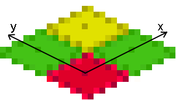
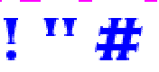

|
|
Kyra XML
Overview | Sprite Editor | Encoder | Kyra XML
The encoder reads XML files and creates from them the data file used to display images. You can create the XML files used by the encoder in 2 ways:
- With the Sprite Editor, which generates XML files for use. Very useful for creating the very complex XML needed for aligned multi-frame sprites.
- By hand. Can be easier if you're importing simple graphics. Also, some features are not supported by the Sprite Editor. If you want to use the following features, you must create the XML manually. (It's not hard.)
-
- Color keyed images. Sprites that are defined by color information (color keys).
- Fonts.
- User data in the '.dat' file.
- Generated Isometric and rotated images.
Topics in this page:
Using Color Keys (Direct Encoding) [version1.5]
The following is an example of color keyed data:

The blue sphere and the green ellipse are contains in yellow boxes. The yellow boxes define the bonuds of the sprite's frame. If you'll look carefully, you'll notice the black nocks in the yellow box. These mark the x and y hotspots for the sprite. The hotspots must be in the top and left of the frame, if they are used at all.
Example XML:
<File filename="bemParticle.tga" >
<ColorKey sprite="PARTICLE"
action="ROUND"
color="#ffff00"
frameCount="1" />
<ColorKey sprite="PARTICLE"
action="OBLONG"
color="#ffff00"
frameCount="1" />
</File>
</Direct>
The <Direct> element marks this as a color key and image file, as opposed to the <Definition> file used by the Sprite Editor and the Font system.
The <File> element loads a file for processing. There can be multiple file tags in one <Direct> XML file; this is NOT true of <Definition> files, which can only have one image file. The <File> tag supports <TransparentX> (see below) allowing you to mark certain colors as transparent. The 'filename' attribute can be a relative path. The definition of a Sprite, Actions, or Frames can span multiple image files or XML files.
ColorKey Element.
The ColorKey tells the encoder to look for data to encode in the image file. It supports the followng attributes:
- sprite="spritename" or tile="tilename". Must be specified. Tells the encoder to read a sprite or tile.
- action="actionname". Sprite only, optional, default is "NONE". Specify the action name.
- color="#rrggbb". The color of the color key that marks the frame of the data. Default is "FFFF00". Any break in the color will interpreted as a marker for the hotspot. A hotspot should never be put at (0,0), as this will confuse the encoder. If you don't specify a hotspot with the marker, 0,0 will be assumed.
- frameCount="integer". The number of frames to read in to the current Sprite and Action.. Frame are read from left to right, top to bottom. If not specifed, all the marked data in the current file will be read as frames in the current Sprite and Action.
- hotspotx="integer" and hotspoty="integer". Specify the hotspot. Generally not used in a ColorKey file. Will override any marker found. (Normally the marker is used -- it's easier.)
- deltax="integer" and deltay="integer". Specify the frame delta.
Image Element
The Image element
reads the entire image file as one frame of a sprite or tile.
- sprite="spritename" or tile="tilename". Must be specified. Tells the encoder to read a sprite or tile.
- action="actionname". Sprite only, optional, default is "NONE". Specify the action name.
- hotspotx="integer" and hotspoty="integer". Specify the hotspot. Generally not used in a ColorKey file. Will override any marker found.
- deltax="integer"
and deltay="integer". Specify the frame delta.
Isotile generation
Isotiles are KrSprites! Isometric tiles are traditionally used to create isometric worlds, so that is what they are called in Kyra. However, they are implemented as KrSprites in the Kyra engine, not KrTiles.
Isometric world tiles are somewhat difficult to create. The encoder can simplify this process by creating isometric tiles for you, from any rectangular source image. Rotation can also be applied.
First, the anatomy of an isometric tile:

Some geometry: the x axis diagonal, positive up and to the right. The y axis is diagonal, positve up and to the left. The z axis is positive up out of the screen. Therefore, apositive rotation is counter clockwise. From the red tile, East is positve X one step, to the green tile on the right. North is positve Y one step, to the green tile on the left.
Of the 4 pixels that could be the center of the tile, the upper left is chosen. (Marked on diagram.) This is the "rounded down" choice of the 4 pixels.
Note the red tile. It is 14 pixels wide, and 8 pixels high. (That's crazy small, but will suffice for example.) But it's isometric width is 16 pixels. Huh?
From the center of the red tile (or any point, for that matter), the next tile East is red.x + width, red.y + height. For that to be true, the "isometric width" is always 2 pixels wider than the "pixel width". Width, unless specified otherwise, refers to the isometric width, not pixel. Very important to keep in mind. Kyra uses a particular geometry that results in this artifact. Other geometries have other problems, so it is as good as any.
Again, all isotiles are Sprites. Isotiles are only supported at this time when using Direct Encoding. In your <ColorKey> or <Image> tag, add the 'isotile' attribute:
- isotile="width". The width is the isometric width, and must be a multiple of 4. The source rectangle can be any size, and will be antialiased and scaled as needed. Note that the source rectangle should be a square.
The BEM demo uses automatic isotile generation for the Floor. Rotation is also used. For an example of the XML used, see the "bem2.xml" file in the "tests" subdirectory.
Rotation
You can generated rotated tiles from one source image. Also very useful. Rotation is a bit strange, however. The engine doesn't "know" what rotation is. It's just a special output setting of the encoder.
Setting a rotation will change the name of the Action.
It's a littly hacky, but I'm not planning to add rotation directly to the engine.
Rotations applied by the encoder change the action name to reflect the rotation. ROTxxx, where xxx is the rotation, in integer degrees. It as appended as the last segment of the name. For instance,
"FLOOR.ROT090" and FLOOR | ROT090
would be the string and integer representations of a rotated tile. (See SetActionRotated() in the API for a convenience function to generate the rotate name at run time.)
In the tag, add the 'rotation' attribute:
- rotation="value". The value of rotation can be a common seperate list "0, 90, 180, 270", or a division of a circle "d4". "d4" generates the 0, 90, 180, and 270 variants. Note that only these 4 values are supported by isotiles. (Generalized rotation in the future may be different -- but isotiles will always be locked to the cardinal directions.)
Font Support
Kyra supports both fixed width fonts and proportional fonts. XML definition files are created for the fonts, which reference an image file where the source font images are. All Kyra fonts are bitmap fonts. Once the XML file is set up for the font image file, the font can be written to the dat file using the Encoder.
Each glyph in the Kyra font is referenced by a 16 bit unsigned integer. Theoretically, this means you could have a font with 64K glyphs. Practicially, that's a lot of memory. But it does means strings, to the Kyra engine, are internationalized and you can use "wide" font sets.
Kyra does not interpret encodings: it simply maps a numerical value to a glyph. Encodings that match Kyra's internal representation nicely are:
- Latin-1 is a good choice for the European languages.
- ASCII
- UTF-16 without surrogates (UCS-2). A subset, of course, in order to have reasonable memory usage.
Fixed Width Fonts
In a fixed width font, every glyph is the same width. Most console fonts are of this type. The source image file consists of all the desired characters laid out side by side in one long row. The height of the source file is the height of the glyphs in font, and the size of each glyph is the width of the image file divided by the # of glyphs in the font.
<Definition filename="ConsoleFont.bmp" Transparent0="LowerLeft">
<Font name="CONSOLE" start="32" length="95" type="fixed" />
</Definition>
Definition Element.
- filename attribute. Specifies the image file to be used. Anything supported by SDL_Image is acceptable.
- TransparentX attribute. Specifies color keys to be interpreted as transparent pixels. If the font has an alpha channel, this should not be specified; alpha will be interpreted like it is for Sprites. The alpha channel is used to make some very attractive anti-aliased fonts. If the font does not have an alpha channel, the color keys can be specified by value (#rrggbb) or location (LowerLeft, LowerRight, UpperLeft, UpperRight).
Font Element.
- name attribute. The name to the Kyra engine. In this example you would use GetFontResource( "CONSOLE" ) or GetFontResource( CONSOLE ) depending on whether you prefer strings or enums.
- start attribute. The starting index of the first glyph.
- length attribute. The number of glyphs in the font.
- type attribute. Designates this is a fixed width font.
- space attribute (optional). Make the specified glyph number a space. Effectively adds a space to fonts which don't define a space glyph.
Proportional Fonts
Kyra supports the SFont and DFont file formats. An SFont file puts the glyphs and width information for the glyphs into the same image file. The height of the image file is the height of each glyph, plus one extra row of spacing information. (Note that DFont actually can use a height channel, which Kyra ignores.) Looking at a small excerpt of an SFont font file:

This is a zoom in on a nicely anti-aliased font. The top row of pixels is alternating runs of pink pixels (non-transparent) and transparent pixels (which show white in the image.) The image below a transparent run is interpreted as a glyph. The non-transparent runs (they don't have to be pink) are thrown away by the Encoder.
Using this system, each glyph can be given a different width, which leads to a much more visually appealing font for many applications. Take the example of the letter 'i' vs the letter 'w'. In a fixed width font, the 'i' tends to be surrounded by too much space, while a 'w' get crowded. On the other hand, for programming and tabular data, fixed width fonts allow text to be more carefully organized.
Kyra interprets the world through transparency, and can read any SFont or DFont file. However, if you wish font files generated for Kyra to work with the SFont and DFont libraries, you should review other SFont and DFont files for compatibility.
<Definition filename="Sans_Green_24.png">
<Font name="COPPER" start="33" type="sfont" space="32" />
</Definition>
Definition Element.
- filename attribute. Specifies the image file to be used. Anything supported by SDL_Image is acceptable.
- TransparentX attribute. Specifies color keys to be interpreted as transparent pixels. If the font has an alpha channel, this should not be specified; alpha will be interpreted like it is for Sprites. The alpha channel is used to make some very attractive anti-aliased fonts. If the font does not have an alpha channel, the color keys can be specified by value (#rrggbb) or location (LowerLeft, LowerRight, UpperLeft, UpperRight).
Font Element.
- name attribute. The name to the Kyra engine. In this example you would use GetFontResource( "COPPER" ) or GetFontResource( COPPER ) depending on whether you prefer strings or enums.
- start attribute. The starting index of the first glyph.
- type attribute. Designates this is a proportional font.
- space attribute (optional). Make the specified glyph number a space. Effectively adds a space to fonts which don't define a space glyph.
User Data [version 1.6]
Any text or binary data can be written to a .dat file. User data elements -- "BinaryFile" and "TextFile" -- are contained inside "Direct" elements. An example:
<Direct><TextFile filename="poem.txt" name="POEM"/><BinaryFile filename="title.bin" name="TITLE"/></Direct>
Binary Data
The BinaryData element encodes a file, verbatim, into the .dat. The entire file is included. It can later be accessed from the Vault as a "KrBinaryDataResource" class.
- filename attribute. The file to include in the .dat.
- name attribute. The name of the resource, used to fetch it from the Vault. This will also be written to the generated header file.
Text Data
The TextData element encodes a text file into the .dat. The entire file is included. Lines will be newline terminated, and the block of text will be null terminated. (It will be newline terminated regardless of the host or reading OS.) It can later be accessed from the Vault as a "KrTextDataResource" class.
- filename attribute. The file to include in the .dat.
- name attribute. The name of the resource, used to fetch it from the Vault. This will also be written to the generated header file.
Sprite and Tile
A typical Kyra Sprite and Tile definition looks something like:
<Definition filename="bem.bmp"
Transparent0="#000000" Transparent1="#E02DB8">
<Sprite name="BRAIN">
<Action name="WALK.DIR3">
<Frame
x="442" y="6" width="73" height="152"
hotspotx="486" hotspoty="146" deltax="6"
deltay="3" />
</Action>
</Sprite>
<Tile name="SPACE" x="201"
y="280" size="172" />
</Definition>
The first tag, "Definition", defines the image file used. The "filename" attribute is the source name of the image. Any format supported by SDL_Image may be used. The following tags "TransparentX" are color keys. For source files which don't have an alpha channel, the RGB colors in the transparency tags will be interpreted as transparent by the encoder.
Sprites are made of 1 or more Actions. Each Action is made of 1 or more Frames. A Sprite anly has a "name" attribute. Likewise, an Action only has a "name". A Frame has:
- An x and y location in the source file.
- A width and height in the source file.
- A "hotspot". The location where the 0,0 coordinate of the image should be. This is in source file coordinates, NOT an offset from x and y.
- A delta. The deltax and deltay are the pixels the sprite moves between frames. In a multiframe sprite, the delta for the first frame is the change in x and y that should be applied before drawing the second frame. In this example, their is only one frame, so the delta is the change in x and y per frame, which is the same as the velocity of the sprite.
A Tile is always square, and does not have a hotspot or delta. It is defined by a location and size.